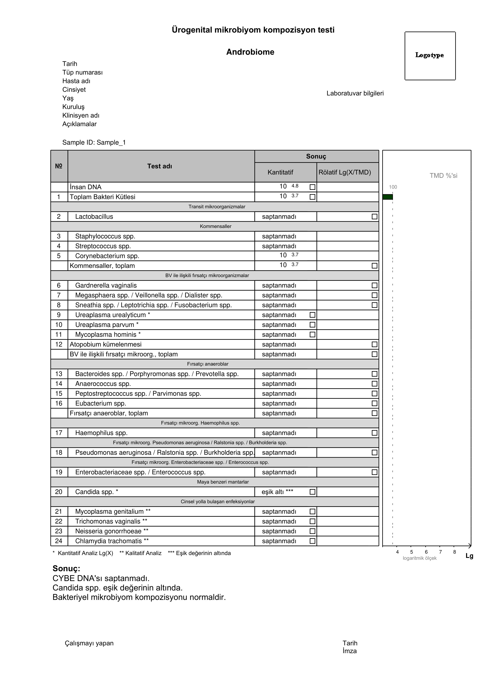
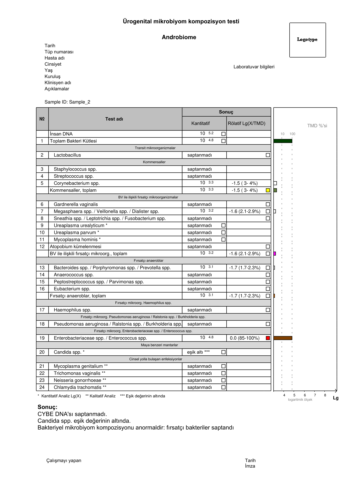
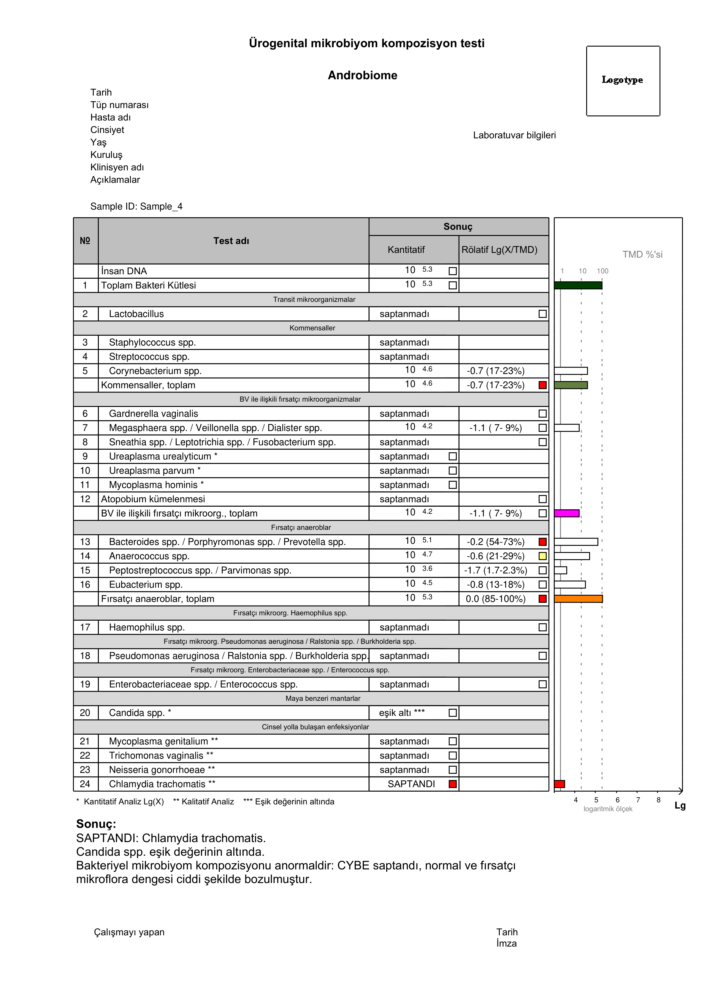

ANDROBIOME
Erkek ürogenital sistem mikrobiyotasının kapsamlı değerlendirilmesi ve CYBE etkeni zorunlu patojenlerin tespiti
Erkek Ürogenital Mikrobiyom Analizi
2
Androbiome, erkek ürogenital sistem mikrobiyotasının durumunun değerlendirilmesi ve cinsel yolla bulaşan enfeksiyonların (CYBE) etkeni olan zorunlu patojenlerin tespiti için kapsamlı bir Real-Time PCR tabanlı testtir. Kültürde üretilmesi zor olan anaerobik mikroorganizmalar dahil olmak üzere normal ve fırsatçı mikrobiyota bileşenlerinin hızlı kantitatif tayinini sağlar.
Normal ve fırsatçı mikrobiyota bileşenlerinin oransal dağılımını belirler
C. trachomatis, M. genitalium, N. gonorrhoeae, T. vaginalis tespiti
Kronik hastalık formları ve tedaviye yetersiz yanıt durumlarında detaylı değerlendirme
Klasik kültür yöntemiyle saptanamayan anaerobları ve zor üreyen mikroorganizmaları da kapsar
| Mikroorganizma | Kategori |
|---|---|
| Göstergeler | |
| İnsan genomik DNA'sı | Numune kalite kontrolü |
| Toplam Bakteri Kütlesi (TBK) | Genel bakteri kantitasyonu |
| Normal Mikrobiyota (Kommensaller) | |
| Staphylococcus spp. | Normal kommensal |
| Streptococcus spp. | Normal kommensal |
| Corynebacterium spp. | Normal kommensal |
| Geçici Mikroorganizmalar | |
| Lactobacillus spp. | Partner kontaminasyonu göstergesi |
| BV ile İlişkili Fırsatçı Mikroorganizmalar | |
| Gardnerella vaginalis | Fırsatçı |
| Megasphaera spp. / Veillonella spp. / Dialister spp. | Fırsatçı |
| Sneathia spp. / Leptotrichia spp. / Fusobacterium spp. | Fırsatçı |
| Ureaplasma urealyticum | Fırsatçı mikoplazma |
| Ureaplasma parvum | Fırsatçı mikoplazma |
| Mycoplasma hominis | Fırsatçı mikoplazma |
| Atopobium kümesi | Fırsatçı |
| Fırsatçı Anaeroblar | |
| Bacteroides spp. / Porphyromonas spp. / Prevotella spp. | Fırsatçı anaerob |
| Anaerococcus spp. | Fırsatçı anaerob |
| Peptostreptococcus spp. / Parvimonas spp. | Fırsatçı anaerob |
| Eubacterium spp. | Fırsatçı anaerob |
| Diğer Fırsatçı Mikroorganizmalar | |
| Haemophilus spp. | Fırsatçı |
| Pseudomonas aeruginosa / Ralstonia spp. / Burkholderia spp. | Fırsatçı |
| Enterobacteriaceae spp. / Enterococcus spp. | Fırsatçı |
| Maya Mantarları | |
| Candida spp. | Maya mantarı |
| Zorunlu Patojenler (CYBE) | |
| Mycoplasma genitalium | Zorunlu patojen |
| Trichomonas vaginalis | Zorunlu patojen |
| Neisseria gonorrhoeae | Zorunlu patojen |
| Chlamydia trachomatis | Zorunlu patojen |
3
| Biyomateryal | Tanı Hedefi |
|---|---|
| Glans penis / prepisyum epitel sürüntüsü | Üretrit, balanopostit |
| Üretra sürüntüsü | Üretrit |
| Ejakülat | Prostatit, vezikülit, epididimit |
| Prostat salgısı | Prostatit |
| İdrar (ilk porsiyon) | Üretrit (sürüntü yerine alternatif) |
| Kural | Süre |
|---|---|
| Cinsel perhiz veya bariyer kontrasepsiyon kullanımı | 3 gün önce |
| Antiseptik kullanımından kaçınılması (antibakteriyel sabunlar dahil) | Test öncesi |
| Sürüntü alınacaksa idrar yapmama | 1,5–2 saat önce |
| Akut prostatit şüphesinde prostat masajı | Kesinlikle yasak! |
Antibiyotik kullanımı sırasında Androbiome incelemesi reçete edilebilir (örn. tedavi takibi için), ancak antibiyotik tedavisinin sonuçları etkileyebileceği göz önünde bulundurulmalıdır.
Androbiome testi ölçü birimi olarak genom eşdeğeri (GE)/numune kullanır. GE, bir mikroorganizmanın bir genomuna karşılık gelen genetik materyal miktarıdır ve mikrobiyolojik kültürdeki KOB'a benzerdir.
Not: Patoloji alanına giren göstergelerin klinik önemi, tedavi eden hekim tarafından tanı hedeflerine ve hastanın genel muayene sonuçlarına göre değerlendirilmelidir.
4
Bu mikroorganizmalar, yetersiz biyomateryal durumunda bile sonuçta raporlanır.
Zorunlu patojenler: Saptanmadı / SAPTANDI
Candida spp.: ED altında / 103–104 / >104
1. İnsan DNA'sı >103 • 2. TBK >104
Hem TBK hem de İnsan DNA'sı eşik değerinin altındaysa → yetersiz biyomateryal raporlanır
3. Lactobacillus spp. >%10 → eşik aşıldı (partner kontaminasyonu)
Normal mikrobiyom yapısı:
Anormal mikrobiyom yapısı:
• Zorunlu patojenlerin varlığı • Candida spp. varlığı • Baskın mikroorganizma grubunun belirlenmesi ile bakteriyel mikrobiyom yapısının değerlendirilmesi
Lactobacillus spp. erkek numunelerinde: Erkek ürogenital sisteminde Lactobacillus normalde bulunmaz. Eşik değerini aşan Lactobacillus varlığı, kadın partnerin mikrobiyotası ile kontaminasyonu gösterir. Bu durumda numune yeniden alınmalıdır.
5
Kommensal floranın baskın olduğu, CYBE ve fırsatçı patojen saptanmayan sağlıklı bir erkek ürogenital mikrobiyota profili. Logaritmik ölçekli çubuk grafik, kommensallerin toplam bakteri kütlesinin tamamına yakınını oluşturduğunu göstermektedir.

CYBE DNA'sı saptanmadı. Candida spp. eşik değerinin altında. Bakteriyel mikrobiyom kompozisyonu normaldir.
6
Kommensal floranın azaldığı ve fırsatçı mikroorganizmaların arttığı bir mikrobiyom profili. Enterobacteriaceae spp. / Enterococcus spp. baskın hale gelmiştir; ancak CYBE etkenleri negatiftir. Kronik veya tekrarlayan ürogenital enfeksiyonlarda sık karşılaşılan bir tablo.

CYBE DNA'sı saptanmadı. Candida spp. eşik değerinin altında. Bakteriyel mikrobiyom kompozisyonu anormaldir: fırsatçı bakteriler saptandı.
7
Normal ve fırsatçı mikroflora dengesinin ciddi şekilde bozulduğu, Chlamydia trachomatis pozitif bir vaka. Fırsatçı anaeroblar toplam bakteri kütlesinin büyük bölümünü oluşturmuş, kommensaller belirgin şekilde azalmıştır. Acil antimikrobiyal tedavi planlaması gerektirir.

SAPTANDI: Chlamydia trachomatis. Candida spp. eşik değerinin altında. Bakteriyel mikrobiyom kompozisyonu anormaldir: CYBE saptandı, normal ve fırsatçı mikroflora dengesi ciddi şekilde bozulmuştur.